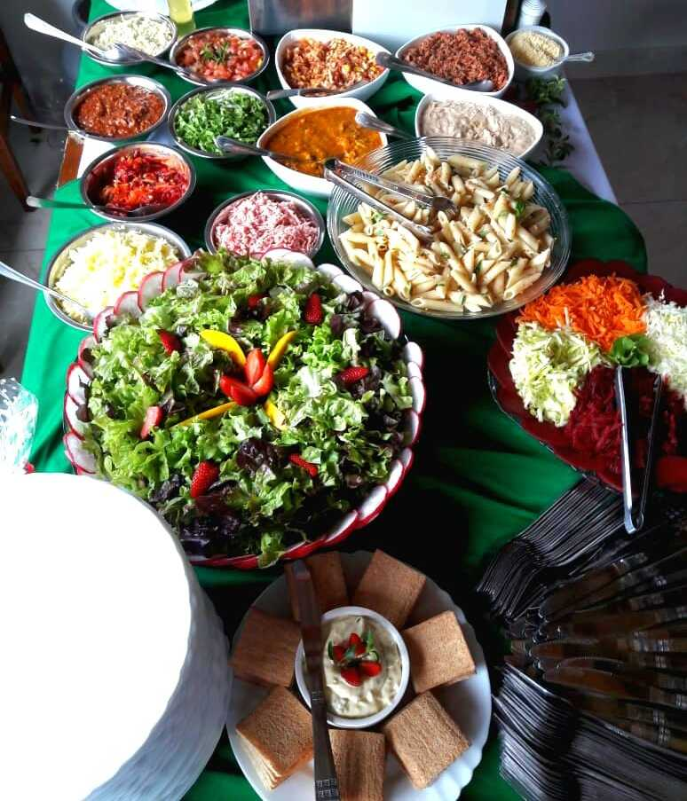

Crepe conto de fadas
Torne seu evento um sonho
Com uma equipe de profissionais que atuam no ramo a mais de 8 anos, especializados em Crepe Francês. o Buffet Crepe conto de Fadas, busca atender clientes com qualidade, dedicação e principalmente amor.
Pensando em atender da melhor forma possível, elaboramos um cardápio diferenciado com produtos de primeira linha, e diversas opções para que seus convidados tenham a opção de escolher seus próprios crepes.
